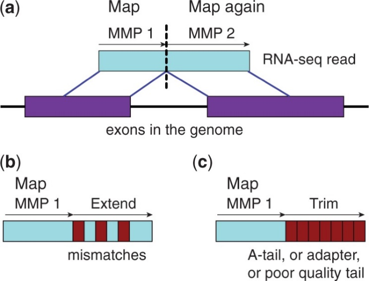
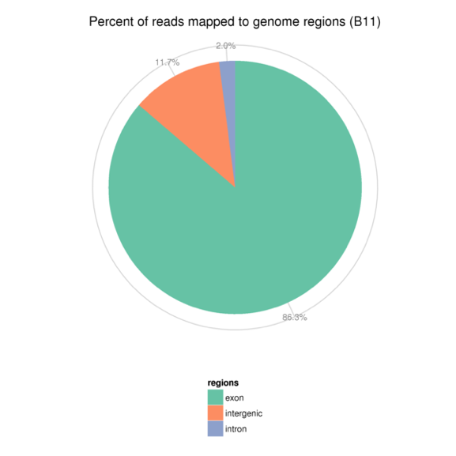

参考序列比对(Reads Mapping)是指将经过下机处理的原始数据(Sequenced Reads)比对到参考基因组上。嘉因生物采用主流分析软件STAR对RNA-seq测序数据进行比对分析。STAR采用Maximal Mappable Prefix（MMP）搜索方法，可以对junction reads进行精确定位，如下图3.3.1所示，其综合性能在同类比对软件中表现较为突出。
图3.3.1 数据回帖原理
表2 参考序列比对结果统计表
| Control1 | Control2 | Control3 | Treat1 | Treat2 | Treat3 | |
|---|---|---|---|---|---|---|
| Number of input reads | | 23624094 | 23967327 | 24004478 | 21566180 | 21623553 | 21555629 |
| Average input read length | | 300 | 300 | 300 | 300 | 300 | 300 |
| UNIQUE READS: | ||||||
| Uniquely mapped reads number | | 21894148 | 21858030 | 21986062 | 19906147 | 20067278 | 19758528 |
| Uniquely mapped reads % | | 92.68% | 91.20% | 91.59% | 92.30% | 92.80% | 91.66% |
| Average mapped length | | 296.92 | 296.65 | 296.56 | 296.81 | 297.05 | 296.63 |
| Number of splices: Total | | 23702756 | 23606514 | 23938109 | 21700625 | 21958587 | 21420931 |
| Number of splices: Annotated (sjdb) | | 23161183 | 23113486 | 23444298 | 21214359 | 21509837 | 20962507 |
| Number of splices: GT/AG | | 23439822 | 23352787 | 23678758 | 21464862 | 21727207 | 21193348 |
| Number of splices: GC/AG | | 207449 | 201223 | 205535 | 188090 | 184709 | 180643 |
| Number of splices: AT/AC | | 18286 | 17244 | 17639 | 15743 | 16268 | 15773 |
| Number of splices: Non-canonical | | 37199 | 35260 | 36177 | 31930 | 30403 | 31167 |
| Mismatch rate per base, % | | 0.31% | 0.36% | 0.38% | 0.33% | 0.35% | 0.36% |
| Deletion rate per base | | 0.01% | 0.01% | 0.01% | 0.01% | 0.01% | 0.01% |
| Deletion average length | | 2.16 | 2.19 | 2.14 | 2.16 | 2.11 | 2.19 |
| Insertion rate per base | | 0.02% | 0.01% | 0.01% | 0.01% | 0.01% | 0.01% |
| Insertion average length | | 1.51 | 1.53 | 1.53 | 1.51 | 1.53 | 1.53 |
| MULTI-MAPPING READS: | ||||||
| Number of reads mapped to multiple loci | | 401512 | 421307 | 413327 | 353764 | 372265 | 382722 |
| % of reads mapped to multiple loci | | 1.70% | 1.76% | 1.72% | 1.64% | 1.72% | 1.78% |
| Number of reads mapped to too many loci | | 3546 | 3865 | 3874 | 3315 | 3129 | 3567 |
| % of reads mapped to too many loci | | 0.02% | 0.02% | 0.02% | 0.02% | 0.01% | 0.02% |
| UNMAPPED READS: | ||||||
| % of reads unmapped: too many mismatches | | 0.00% | 0.00% | 0.00% | 0.00% | 0.00% | 0.00% |
| % of reads unmapped: too short | | 5.57% | 6.99% | 6.63% | 6.00% | 5.42% | 6.50% |
| % of reads unmapped: other | | 0.04% | 0.04% | 0.04% | 0.04% | 0.04% | 0.04% |
注：
1) Number of input reads：RNA-seq原始数据下机处理后，参考序列比对分析中输入序列数目统计；
2) Average input read length：序列平均长度统计；
3) Uniquely mapped reads number： 特异性回帖至参考基因组上的序列数目统计，即序列只回帖至参考基因组某一特定位置；
4) Uniquely mapped reads %： 特异性回帖至参考基因组上的序列百分比统计；
5) Average mapped length： 回帖至参考基因组上的序列平均长度统计；
6) Number of splices: Annotated(sjdb)： 已经注释的可变剪接数目统计（即这部分可变剪接出现在参考文档.gtf中）；
7) Number of non-canonical splices：未经注释的可变剪接数目统计；
8) Mismatch rate per base: 错误匹配百分比统计（一般≤0.8%）；
9) Deletion rate per base：缺失百分比统计；
10) Deletion average length: 缺失长度平均值统计；
11) Insertion rate per base：插入百分比统计;
12) Insertion average length: 插入长度平均值统计；
13) Number of reads mapped to multiple loci： 回贴至参考基因组多个位点的序列数目统计；
14) % of reads mapped to multiple loci： 回帖至参考基因组多个位点的序列百分比统计；
Number of reads mapped to too many loci: 如果序列回帖至参考基因组的位置个数大于10，则被认为是改序列为 “too many loci”;
15) % of reads mapped to too many loci： “too many loci”百分比统计；
16) % of reads unmapped: too many mismatches: 序列中包含太多的错配而造成的回帖失败；默认值为序列长度的30%(0.3*read length)或10个以上错配；
17) % of reads unmapped due to too short: 序列太短造成的回帖失败；默认值为2/3序列长度；
18) % of reads unmapped due to other reasons: 其他原因造成的回帖失败。
将比对到基因组上的reads分布情况进行统计，定位区域分为Exon(外显子)、Intron(内含子)、Intergenic(基因间区)和。在基因组注释较为完全的物种中，比对到Exon（外显子）的reads含量最高，比对到Intron（内含子）区域的reads来源于pre-mRNA的残留及可变剪接过程中发生的内含子滞留事件导致的，而比对到Intergenic（基因间区）的reads是因为基因组注释不完全。
图3.3.2 Reads在参考基因组不同区域的分布情况
图3.3.3 Reads在染色体上的密度分布图